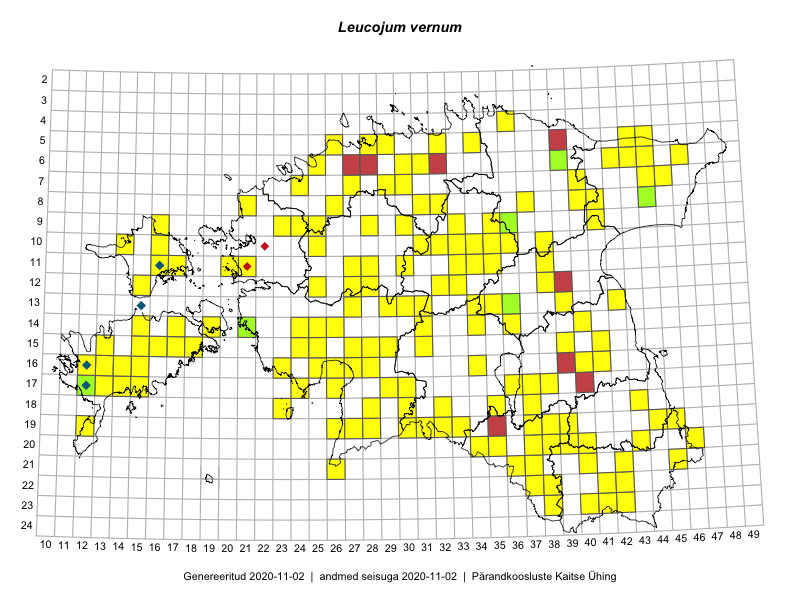

Leucojum vernum
Uuendatud: 2016-12-08
Kaardile koondatud taksonid: Leucojum vernum L.

Kaart põhineb 193 kirjel, neist vaatlusi 192 ja eksemplare 1. Taksonit on leitud 125 ruudust.
| Ruut | Vaatleja(d) | Vaatlusaeg | Kirje tüüp | Viide andmebaasikirjele |
|---|---|---|---|---|
| 07-45 | Thea Kull | 2015-04-27 | punkt | vaata PlutoFis |
| 19-30 | Peedu Saar, Liina Oja | 2015-05-22 | punkt | vaata PlutoFis |
| 11-17 | Peedu Saar, Toomas Kukk | 2015-05-28 | punkt | vaata PlutoFis |
| 13-30 | Toomas Kukk, Ott Luuk, Peedu Saar, Indrek Tammekänd, Timo Luhamäe, Jana-Maria Habicht, Ester Valdvee | 2015-05-09 | punkt | vaata PlutoFis |
| 13-27 | Toomas Kukk, Indrek Tammekänd | 2015-05-09 | punkt | vaata PlutoFis |
| 12-33 | Toomas Kukk, Indrek Tammekänd | 2015-05-10 | punkt | vaata PlutoFis |
| 13-34 | Toomas Kukk, Indrek Tammekänd | 2015-05-10 | punkt | vaata PlutoFis |
| 09-41 | Toomas Kukk, Raivo Kalle | 2015-05-14 | punkt | vaata PlutoFis |
| 06-42 | Toomas Kukk, Eerik Leibak | 2015-04-27 | ruut/ala | vaata PlutoFis |
| 06-46 | Toomas Kukk, Eerik Leibak | 2015-04-25 | ruut/ala | vaata PlutoFis |
| 06-46 | Toomas Kukk, Eerik Leibak | 2015-04-25 | punkt | vaata PlutoFis |
| 06-42 | Toomas Kukk, Eerik Leibak | 2015-04-27 | punkt | vaata PlutoFis |
| 10-16 | Toomas Kukk, Peedu Saar | 2015-05-27 | punkt | vaata PlutoFis |
| 10-16 | Toomas Kukk, Peedu Saar | 2015-05-27 | punkt | vaata PlutoFis |
| 08-44 | Thea Kull, Peedu Saar | 2015-04-27 | punkt | vaata PlutoFis |
| 08-44 | Thea Kull, Peedu Saar | 2015-04-27 | punkt | vaata PlutoFis |
| 07-45 | Thea Kull, Peedu Saar | 2015-04-27 | punkt | vaata PlutoFis |
| 12-38 | Thea Kull, Meeli Mesipuu | 2015-04-16 | punkt | vaata PlutoFis |
| 09-35 | Thea Kull, Hannes Pehlak | 2015-05-11 | punkt | vaata PlutoFis |
| 09-35 | Thea Kull, Hannes Pehlak | 2015-05-11 | punkt | vaata PlutoFis |
| 10-33 | Thea Kull, Hannes Pehlak | 2015-05-10 | punkt | vaata PlutoFis |
| 11-33 | Thea Kull, Hannes Pehlak | 2015-05-10 | punkt | vaata PlutoFis |
| 10-35 | Thea Kull, Hannes Pehlak | 2015-05-11 | punkt | vaata PlutoFis |
| 05-32 | Rein Kalamees | 2015-04-25 | punkt | vaata PlutoFis |
| 12-38 | Thea Kull, Meeli Mesipuu | 2015-04-16 | punkt | vaata PlutoFis |
| 17-13 | Triin Reitalu, Mari Reitalu | 2015-04-19 | ruut/ala | vaata PlutoFis |
| 17-13 | Triin Reitalu, Mari Reitalu | 2015-04-19 | punkt | vaata PlutoFis |
| 13-39 | Eeva-Maria Jeletsky, Tarmo Niitla | 2015-05-03 | punkt | vaata PlutoFis |
| 13-39 | Eeva-Maria Jeletsky, Tarmo Niitla | 2015-05-03 | ruut/ala | vaata PlutoFis |
| 11-30 | Ott Luuk, Toivo Sepp | 2015-05-18 | punkt | vaata PlutoFis |
| 09-33 | Jana-Maria Habicht, Ester Valdvee | 2015-05-09 | punkt | vaata PlutoFis |
| 06-25 | Jana-Maria Habicht | 2015-04-25 | punkt | vaata PlutoFis |
| 06-25 | Jana-Maria Habicht | 2015-04-25 | punkt | vaata PlutoFis |
| 06-25 | Jana-Maria Habicht | 2015-04-25 | punkt | vaata PlutoFis |
| 06-25 | Jana-Maria Habicht | 2015-04-25 | punkt | vaata PlutoFis |
| 14-19 | Meeli Mesipuu | 2015-05-10 | punkt | vaata PlutoFis |
| 10-32 | Ott Luuk | 2015-04-25 | punkt | vaata PlutoFis |
| 10-31 | Ott Luuk, Toivo Sepp | 2015-04-26 | punkt | vaata PlutoFis |
| 09-30 | Ott Luuk, Toivo Sepp | 2015-04-26 | punkt | vaata PlutoFis |
| 19-33 | Meeli Mesipuu | 2015-05-08 | punkt | vaata PlutoFis |
| 10-34 | Meeli Mesipuu, Maret Gerz | 2015-05-11 | punkt | vaata PlutoFis |
| 11-34 | Meeli Mesipuu, Maret Gerz | 2015-05-11 | punkt | vaata PlutoFis |
| 07-40 | Meeli Mesipuu, Maret Gerz | 2015-05-13 | ruut/ala | vaata PlutoFis |
| 08-37 | Meeli Mesipuu, Maret Gerz | 2015-05-13 | punkt | vaata PlutoFis |
| 16-12 | Mari Reitalu | 2015-04-10 | punkt | vaata PlutoFis |
| 18-37 | Karin Kikas, Elle Rajandu | 2015-04-22 | ruut/ala | vaata PlutoFis |
| 18-37 | Karin Kikas, Elle Rajandu | 2015-04-22 | punkt | vaata PlutoFis |
| 16-41 | Karin Kikas, Elle Rajandu | 2015-04-23 | punkt | vaata PlutoFis |
| 19-37 | Karin Kikas, Elle Rajandu | 2015-04-22 | punkt | vaata PlutoFis |
| 15-39 | Karin Kikas, Elle Rajandu | 2015-04-30 | ruut/ala | vaata PlutoFis |
| 15-39 | Karin Kikas, Elle Rajandu | 2015-04-30 | punkt | vaata PlutoFis |
| 14-36 | Toivo Sepp, Eerik Leibak | 2015-05-13 | ruut/ala | vaata PlutoFis |
| 14-36 | Toivo Sepp, Eerik Leibak | 2015-05-13 | punkt | vaata PlutoFis |
| 10-36 | Toivo Sepp, Eerik Leibak | 2015-05-11 | ruut/ala | vaata PlutoFis |
| 10-38 | Toivo Sepp, Eerik Leibak | 2015-05-11 | ruut/ala | vaata PlutoFis |
| 10-38 | Toivo Sepp, Eerik Leibak | 2015-05-11 | punkt | vaata PlutoFis |
| 10-36 | Toivo Sepp, Eerik Leibak | 2015-05-12 | punkt | vaata PlutoFis |
| 07-44 | Meeli Mesipuu, Liina Oja | 2015-04-27 | ruut/ala | vaata PlutoFis |
| 07-44 | Meeli Mesipuu, Liina Oja | 2015-04-27 | punkt | vaata PlutoFis |
| 06-43 | Meeli Mesipuu, Liina Oja | 2015-04-26 | ruut/ala | vaata PlutoFis |
| 06-43 | Meeli Mesipuu, Liina Oja | 2015-04-26 | punkt | vaata PlutoFis |
| 06-43 | Meeli Mesipuu, Liina Oja | 2015-04-26 | punkt | vaata PlutoFis |
| 06-43 | Meeli Mesipuu, Liina Oja | 2015-04-26 | punkt | vaata PlutoFis |
| 06-43 | Meeli Mesipuu, Liina Oja | 2015-04-26 | punkt | vaata PlutoFis |
| 11-38 | Liina Oja, Ott Luuk | 2015-05-12 | punkt | vaata PlutoFis |
| 06-44 | Liina Oja, Meeli Mesipuu | 2015-04-25 | ruut/ala | vaata PlutoFis |
| 05-44 | Liina Oja, Meeli Mesipuu | 2015-04-25 | punkt | vaata PlutoFis |
| 05-43 | Liina Oja, Meeli Mesipuu | 2015-04-26 | punkt | vaata PlutoFis |
| 17-14 | Sirje Azarov, Mari Reitalu | 2015-04-30 | punkt | vaata PlutoFis |
| 13-42 | Karin Kikas, Elle Rajandu | 2015-05-19 | punkt | vaata PlutoFis |
| 15-41 | Karin Kikas, Elle Rajandu | 2015-04-24 | ruut/ala | vaata PlutoFis |
| 16-40 | Elle Rajandu | 2015-04-25 | punkt | vaata PlutoFis |
| 16-40 | Elle Rajandu | 2015-04-27 | punkt | vaata PlutoFis |
| 22-41 | Elle Rajandu | 2015-05-25 | punkt | vaata PlutoFis |
| 14-40 | Karin Kikas, Elle Rajandu | 2015-04-20 | ruut/ala | vaata PlutoFis |
| 07-40 | Maret Gerz, Meeli Mesipuu | 2015-05-13 | punkt | vaata PlutoFis |
| 16-13 | Mari Reitalu, Triin Reitalu | 2015-04-12 | punkt | vaata PlutoFis |
| 16-14 | Mari Reitalu, Triin Reitalu | 2015-04-12 | punkt | vaata PlutoFis |
| 17-13 | Mari Reitalu, Triin Reitalu | 2015-04-05 | punkt | vaata PlutoFis |
| 16-12 | Mari Reitalu | 2015-04-06 | punkt | vaata PlutoFis |
| 16-12 | Mari Reitalu, Triin Reitalu | 2015-04-06 | punkt | vaata PlutoFis |
| 16-12 | Mari Reitalu | 2014-04-04 | punkt | vaata PlutoFis |
| 16-12 | Mari Reitalu | 2015-03-19 | punkt | vaata PlutoFis |
| 16-12 | Mari Reitalu | 2015-03-19 | punkt | vaata PlutoFis |
| 17-12 | Mari Reitalu | 2015-04-05 | punkt | vaata PlutoFis |
| 17-12 | Mari Reitalu | 2015-04-05 | punkt | vaata PlutoFis |
| 08-41 | Timo Luhamäe, Liina Oja | 2015-05-14 | punkt | vaata PlutoFis |
| 17-36 | Helle Mäemets | 2016-04-02 | punkt | vaata PlutoFis |
| 11-16 | Meeli Mesipuu, Timo Luhamäe | 2015-05-28 | punkt | vaata PlutoFis |
| 19-31 | Ott Luuk, Indrek Tammekänd | 2015-05-22 | punkt | vaata PlutoFis |
| 14-31 | Ott Luuk, Liina Oja | 2015-05-10 | punkt | vaata PlutoFis |
| 13-31 | Ott Luuk, Liina Oja | 2015-05-10 | punkt | vaata PlutoFis |
| 13-35 | Ott Luuk, Liina Oja | 2015-05-11 | punkt | vaata PlutoFis |
| 11-35 | Ott Luuk, Liina Oja | 2015-05-11 | punkt | vaata PlutoFis |
| 20-38 | Kaili Kattai | 2015-05-30 | punkt | vaata PlutoFis |
| 09-28 | Aat Sarv | 2015-05-02 | ruut/ala | vaata PlutoFis |
| 06-44 | Meeli Mesipuu, Liina Oja | 2015-04-25 | punkt | vaata PlutoFis |
| 19-45 | Meeli Mesipuu, Thea Kull | 2016-04-25 | ruut/ala | vaata PlutoFis |
| 18-43 | Thea Kull, Meeli Mesipuu | 2016-04-25 | ruut/ala | vaata PlutoFis |
| 18-43 | Meeli Mesipuu, Thea Kull | 2016-04-25 | punkt | vaata PlutoFis |
| 19-44 | Thea Kull, Meeli Mesipuu | 2016-04-25 | ruut/ala | vaata PlutoFis |
| 19-44 | Meeli Mesipuu, Thea Kull | 2016-04-25 | punkt | vaata PlutoFis |
| 19-45 | Thea Kull, Meeli Mesipuu | 2016-04-25 | punkt | vaata PlutoFis |
| 20-43 | Meeli Mesipuu, Thea Kull | 2016-04-26 | punkt | vaata PlutoFis |
| 23-41 | Meeli Mesipuu, Thea Kull | 2016-04-26 | ruut/ala | vaata PlutoFis |
| 23-42 | Thea Kull, Meeli Mesipuu | 2016-04-26 | punkt | vaata PlutoFis |
| 23-41 | Thea Kull, Meeli Mesipuu | 2016-04-26 | punkt | vaata PlutoFis |
| 21-42 | Thea Kull, Meeli Mesipuu | 2016-04-26 | punkt | vaata PlutoFis |
| 23-40 | Meeli Mesipuu, Thea Kull | 2016-04-27 | punkt | vaata PlutoFis |
| 19-28 | Meeli Mesipuu, Thea Kull | 2016-04-28 | ruut/ala | vaata PlutoFis |
| 19-28 | Meeli Mesipuu, Thea Kull | 2016-04-28 | punkt | vaata PlutoFis |
| 19-28 | Meeli Mesipuu, Thea Kull | 2016-04-28 | punkt | vaata PlutoFis |
| 19-27 | Meeli Mesipuu, Thea Kull | 2016-04-28 | punkt | vaata PlutoFis |
| 19-26 | Meeli Mesipuu, Thea Kull | 2016-04-28 | punkt | vaata PlutoFis |
| 19-26 | Meeli Mesipuu, Thea Kull | 2016-04-28 | punkt | vaata PlutoFis |
| 21-26 | Meeli Mesipuu, Thea Kull | 2016-04-28 | punkt | vaata PlutoFis |
| 16-26 | Thea Kull, Meeli Mesipuu | 2016-04-29 | punkt | vaata PlutoFis |
| 14-26 | Thea Kull, Meeli Mesipuu | 2016-04-29 | punkt | vaata PlutoFis |
| 18-29 | Thea Kull, Meeli Mesipuu | 2016-04-28 | punkt | vaata PlutoFis |
| 19-28 | Thea Kull, Meeli Mesipuu | 2016-04-28 | punkt | vaata PlutoFis |
| 15-27 | Meeli Mesipuu, Thea Kull | 2016-04-29 | ruut/ala | vaata PlutoFis |
| 14-26 | Meeli Mesipuu, Thea Kull | 2016-04-29 | punkt | vaata PlutoFis |
| 16-27 | Meeli Mesipuu, Thea Kull | 2016-04-29 | punkt | vaata PlutoFis |
| 20-39 | Toomas Kukk, Eerik Leibak | 2016-04-25 | ruut/ala | vaata PlutoFis |
| 20-40 | Toomas Kukk, Eerik Leibak | 2016-04-25 | ruut/ala | vaata PlutoFis |
| 23-38 | Toomas Kukk, Eerik Leibak | 2016-04-27 | ruut/ala | vaata PlutoFis |
| 15-31 | Toomas Kukk, Eerik Leibak | 2016-04-28 | ruut/ala | vaata PlutoFis |
| 20-39 | Toomas Kukk, Eerik Leibak | 2016-04-25 | punkt | vaata PlutoFis |
| 20-39 | Toomas Kukk, Eerik Leibak | 2016-04-25 | punkt | vaata PlutoFis |
| 20-40 | Toomas Kukk, Eerik Leibak | 2016-04-25 | punkt | vaata PlutoFis |
| 20-40 | Toomas Kukk, Eerik Leibak | 2016-04-25 | punkt | vaata PlutoFis |
| 20-40 | Toomas Kukk, Eerik Leibak | 2016-04-25 | punkt | vaata PlutoFis |
| 23-38 | Toomas Kukk, Eerik Leibak | 2016-04-27 | punkt | vaata PlutoFis |
| 23-38 | Toomas Kukk, Eerik Leibak | 2016-04-27 | punkt | vaata PlutoFis |
| 23-38 | Toomas Kukk, Eerik Leibak | 2016-04-27 | punkt | vaata PlutoFis |
| 12-38 | Ulvi Selgis | 2015-03-17 | punkt | vaata PlutoFis |
| 12-32 | Tõnu Ploompuu | 2015-03-21 | punkt | vaata PlutoFis |
| 17-36 | Tarmo Timm | 2015-03-13 | punkt | vaata PlutoFis |
| 17-38 | Juhani Püttsepp | 2015-03-15 | punkt | vaata PlutoFis |
| 13-35 | Raivo Kalle | 2015-04-03 | ruut/ala | vaata PlutoFis |
| 15-31 | Toomas Kukk, Eerik Leibak | 2016-04-28 | punkt | vaata PlutoFis |
| 17-30 | Ott Luuk, Tiit Hallikma | 2016-04-28 | ruut/ala | vaata PlutoFis |
| 17-29 | Ott Luuk, Tiit Hallikma | 2016-04-28 | ruut/ala | vaata PlutoFis |
| 16-28 | Ott Luuk, Tiit Hallikma | 2016-04-28 | ruut/ala | vaata PlutoFis |
| 15-29 | Ott Luuk, Tiit Hallikma | 2016-04-28 | ruut/ala | vaata PlutoFis |
| 15-25 | Ott Luuk, Tiit Hallikma | 2016-04-29 | ruut/ala | vaata PlutoFis |
| 14-25 | Ott Luuk, Tiit Hallikma | 2016-04-29 | ruut/ala | vaata PlutoFis |
| 15-17 | Meeli Mesipuu | 2016-05-04 | punkt | vaata PlutoFis |
| 15-18 | Meeli Mesipuu | 2016-05-04 | punkt | vaata PlutoFis |
| 15-27 | Meeli Mesipuu | 2016-05-04 | punkt | vaata PlutoFis |
| 14-15 | Meeli Mesipuu | 2016-05-05 | punkt | vaata PlutoFis |
| 14-17 | Meeli Mesipuu | 2016-05-05 | punkt | vaata PlutoFis |
| 14-17 | Meeli Mesipuu | 2016-05-05 | punkt | vaata PlutoFis |
| 16-15 | Meeli Mesipuu | 2016-05-06 | punkt | vaata PlutoFis |
| 18-35 | Ott Luuk, Thea Kull | 2016-05-05 | ruut/ala | vaata PlutoFis |
| 09-16 | Toomas Kukk, Peedu Saar | 2016-05-08 | punkt | vaata PlutoFis |
| 16-34 | Thea Kull, Ott Luuk | 2016-05-05 | punkt | vaata PlutoFis |
| 16-34 | Thea Kull, Ott Luuk | 2016-05-05 | punkt | vaata PlutoFis |
| 06-31 | Rein Kalamees | 2016-05-07 | punkt | vaata PlutoFis |
| 15-24 | Toomas Kukk, Indrek Tammekänd | 2016-04-29 | punkt | vaata PlutoFis |
| 14-24 | Toomas Kukk, Indrek Tammekänd | 2016-04-29 | punkt | vaata PlutoFis |
| 10-14 | Toomas Kukk, Peedu Saar | 2016-05-07 | punkt | vaata PlutoFis |
| 12-15 | Toomas Kukk, Peedu Saar | 2016-05-07 | punkt | vaata PlutoFis |
| 15-15 | Meeli Mesipuu | 2016-05-06 | punkt | vaata PlutoFis |
| 10-16 | Peedu Saar, Toomas Kukk | 2016-05-08 | punkt | vaata PlutoFis |
| 09-16 | Peedu Saar, Toomas Kukk | 2016-05-08 | punkt | vaata PlutoFis |
| 15-16 | Meeli Mesipuu | 2016-05-06 | punkt | vaata PlutoFis |
| 15-16 | Meeli Mesipuu | 2016-05-06 | punkt | vaata PlutoFis |
| 07-30 | Thea Kull, Meeli Mesipuu | 2016-05-13 | punkt | vaata PlutoFis |
| 08-26 | Thea Kull, Meeli Mesipuu | 2016-05-12 | punkt | vaata PlutoFis |
| 05-29 | Peedu Saar | 2016-05-24 | punkt | vaata PlutoFis |
| 07-29 | Meeli Mesipuu, Thea Kull | 2016-05-13 | punkt | vaata PlutoFis |
| 17-37 | Tiit Hallikma, Ott Luuk | 2016-04-25 | punkt | vaata PlutoFis |
| 17-36 | Tiit Hallikma, Ott Luuk | 2016-04-25 | punkt | vaata PlutoFis |
| 19-37 | Tiit Hallikma, Ott Luuk | 2016-04-25 | punkt | vaata PlutoFis |
| 21-37 | Tiit Hallikma, Ott Luuk | 2016-04-27 | punkt | vaata PlutoFis |
| 21-36 | Tiit Hallikma, Ott Luuk | 2016-04-27 | punkt | vaata PlutoFis |
| 18-30 | Tiit Hallikma, Ott Luuk | 2016-04-27 | punkt | vaata PlutoFis |
| 18-30 | Tiit Hallikma, Ott Luuk | 2016-04-27 | punkt | vaata PlutoFis |
| 15-28 | Tiit Hallikma, Ott Luuk | 2016-04-28 | punkt | vaata PlutoFis |
| 17-29 | Tiit Hallikma, Ott Luuk | 2016-04-28 | punkt | vaata PlutoFis |
| 14-25 | Tiit Hallikma, Ott Luuk | 2016-04-29 | punkt | vaata PlutoFis |
| 15-25 | Tiit Hallikma, Ott Luuk | 2016-04-29 | punkt | vaata PlutoFis |
| 09-24 | Tiit Hallikma, Ott Luuk | 2016-05-13 | punkt | vaata PlutoFis |
| 09-24 | Tiit Hallikma, Ott Luuk | 2016-05-13 | punkt | vaata PlutoFis |
| 12-27 | Tiit Hallikma, Ott Luuk | 2016-05-14 | punkt | vaata PlutoFis |
| 05-26 | Kadi-Liis Kesler | 2015-05-31 | ruut/ala | vaata PlutoFis |
| 11-27 | Ranno Puumets | 2016-04-01 | ruut/ala | vaata PlutoFis |
| 12-27 | Ranno Puumets | 2016-04-01 | ruut/ala | vaata PlutoFis |
| 07-27 | Meeli Mesipuu, Thea Kull | 2016-05-12 | punkt | vaata PlutoFis |
| 08-32 | Meeli Mesipuu, Thea Kull | 2016-05-11 | punkt | vaata PlutoFis |
| 08-31 | Meeli Mesipuu, Thea Kull | 2016-05-11 | punkt | vaata PlutoFis |
| 08-44 | Peedu Saar, Thea Kull | 2015-04-27 | eksemplar | vaata PlutoFis |